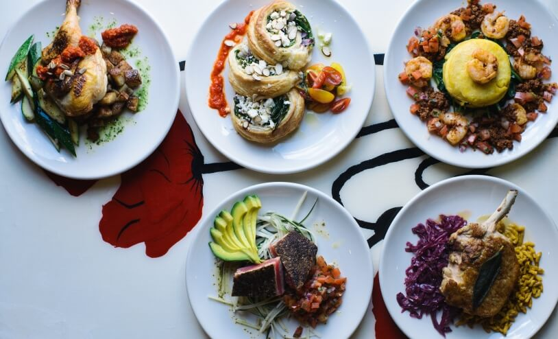
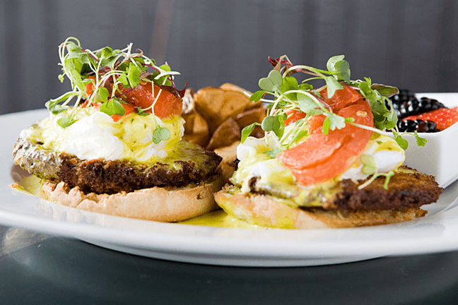
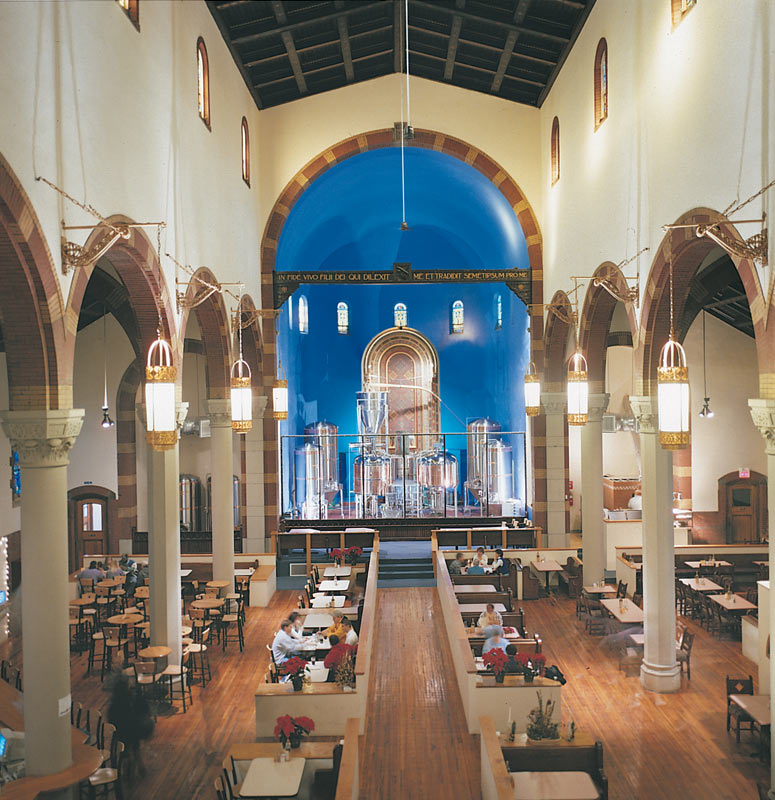

|  | Kaleidoscope Cafe This funky cafe is still in Lawrenceville, but not on Butler street where most of the other places in this website are located. The exterior of the building is decorated like a kaleidoscope and is pretty hard to miss if you are searching for it. Their website says they prefer reservations, but when I went with my roommate they seated us right away. With the place being small and the food being made-to-order, there is a little bit of a wait. We weren't starving so we had fun laughing and people watching the couple across the restaurant. When our food did come, it was so worth it. We ordered the crap dip to start and got salads as our meals, and the service was excellent. |
| Coca Cafe an urban cafe with hearty and unique servings. They have whatever you're in the mood for - whether it be sweet or savory, or a fresh-squeezed juice. Breakfast is my favorite meal and I was excited just reading the menu. I knew I wanted the peach and mascarpone stuffed French toast with blackberry compote before we were even seated. And I was not disappointed - it was different than anything I have eaten. If your go-to breakfast place in Pittsburgh is Pamela's, I highly suggest you reconsider. Although you won't escape the wait, you'll enjoy a decadent meal that you never thought you would like! |  |
|  | The Church Brew Works a beautiful restaurant with classic stained-glass windows and great-smelling pizza. I did not eat here, I just wanted to look around, but the food I saw did smell delicious. It is a huge place surrounded by gothic architecture and large brewing equipment - I could not distinguish whether I was in church or a brewery and it was awesome. |
| The Vandal On my most recent trip, I peeked inside to what I had originally thought was a hair salon. It turns out it's a restaurant with a very clean and hipster feel. |
|